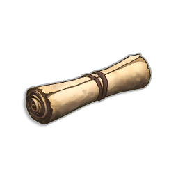

AtlasLoot map · close the game's map (M) to return
The app reopens after installation. Choose later to install and reopen when you next quit.
"Update from game files" reads your installed game (read-only) — run it after a game patch, ideally with the game running so the type mappings refresh too.